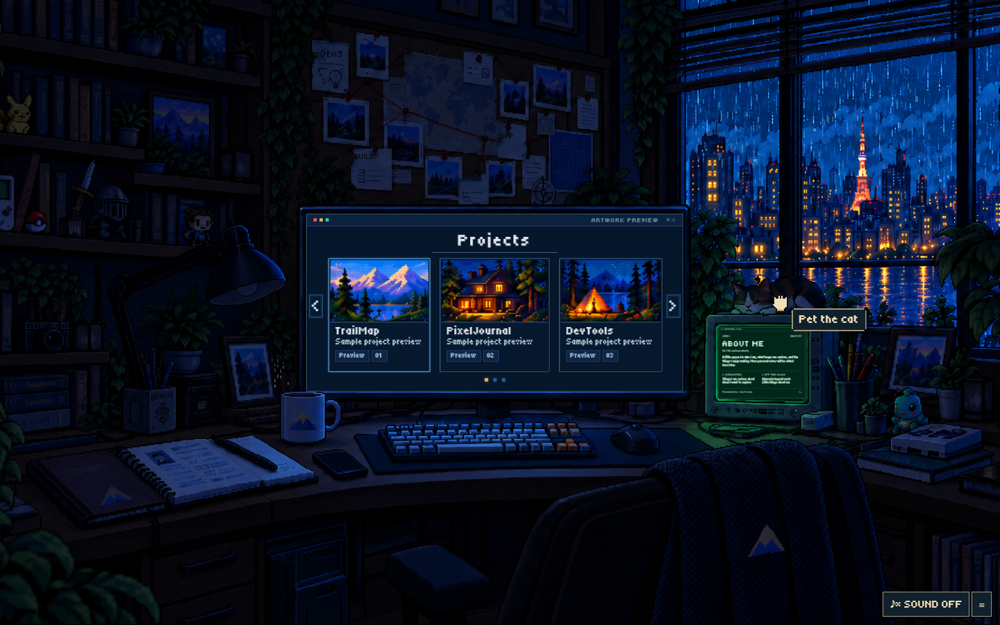
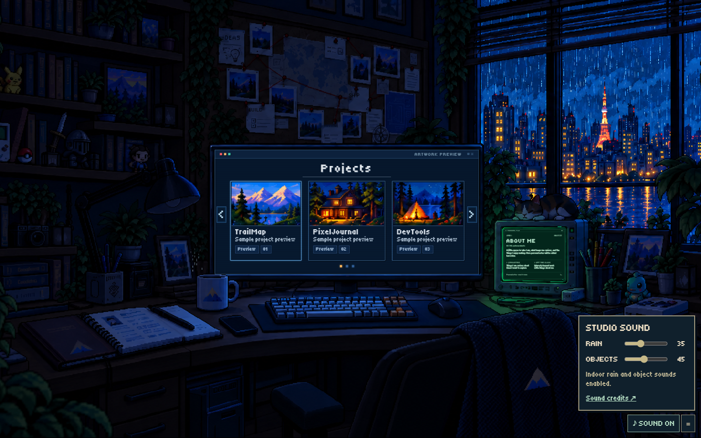
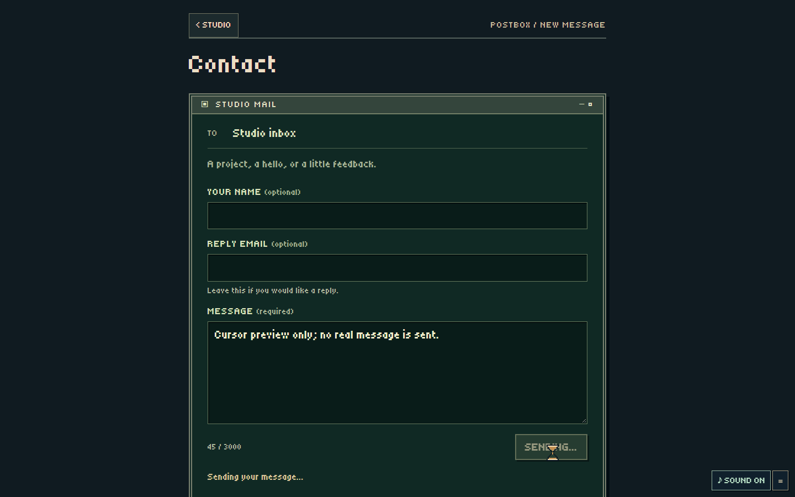
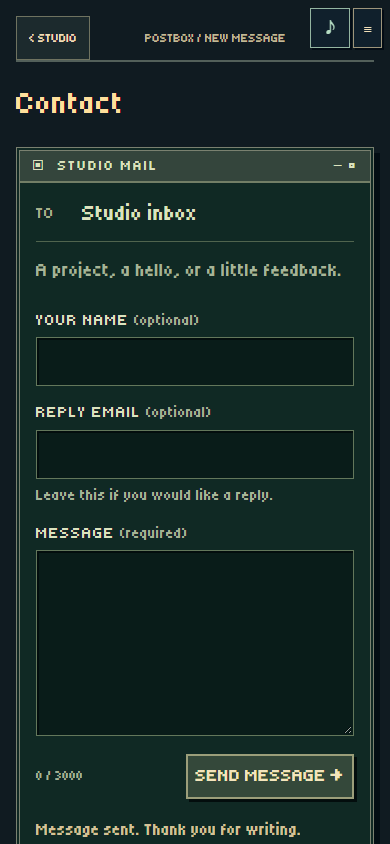

Enable SOUND in the studio to hear the mix. Volume settings are separate; every fresh load starts muted. The preview below was recorded from the actual browser mix: indoor rain, one cat purr, then Projects entry and return. The revised mix has substantially more volume headroom.
Recording sources and licensesRevised levels, lamp hint and inline validation review
arrow
point
grab
closed
pet-sheet
wait-sheet


This screenshot uses a controlled test promise. No email was sent.

